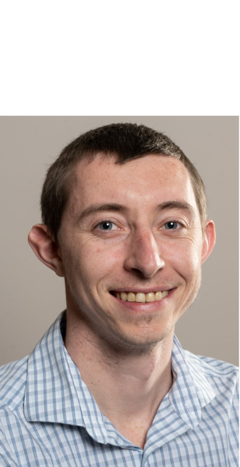

I build data-driven ecosystem models, from Gulf-wide Ecopath with Ecosim and Ecospace models to the agent-based model SwimmingIndividuals, that connect the behavior of individual animals to ecosystem-scale change and inform stock assessment, restoration, and spatial planning.

I am a computational marine biologist and an Assistant Scientist at the University of Miami Cooperative Institute for Marine and Atmospheric Studies, working with the NOAA Southeast Fisheries Science Center. My research spans large-scale ecosystem models that reveal system-level patterns and individual-based models that recover the mechanisms behind them, and it puts both to work for management, from Gulf of America stock assessments to habitat restoration in the Chesapeake Bay and Florida.
I develop open-source scientific software, serve as an Associate Editor at Food Webs, and lead funded research as Principal Investigator through the Deepwater Horizon Open Ocean Trustees, NCEAS, and the Woods Hole Oceanographic Institution.
Large-scale models reveal the patterns, individual-based models recover the mechanisms behind them, and together they support applied decisions.
Large-scale Ecopath with Ecosim and Ecospace models of how marine food webs respond to disturbance, harvest, and climate.
See projects →Agent-based and individual-based models, including SwimmingIndividuals, that let ecosystem properties emerge from individual animals.
See projects →Coupling ecology with economics and management to inform stock assessment, restoration, and spatial planning.
See projects →High-performance agent-based model for marine ecosystems, simulating metabolic and behavioral trajectories of millions of individuals on hybrid GPU–CPU hardware.
An R framework that automates the calibration of Ecopath with Ecosim and Ecospace models using modern optimization techniques.
An R package that computes ecosystem caps from Ecopath with Ecosim and Ecospace output to estimate maximum sustainable yields.
A selection of recent peer-reviewed articles and technical reports. Full list on Google Scholar